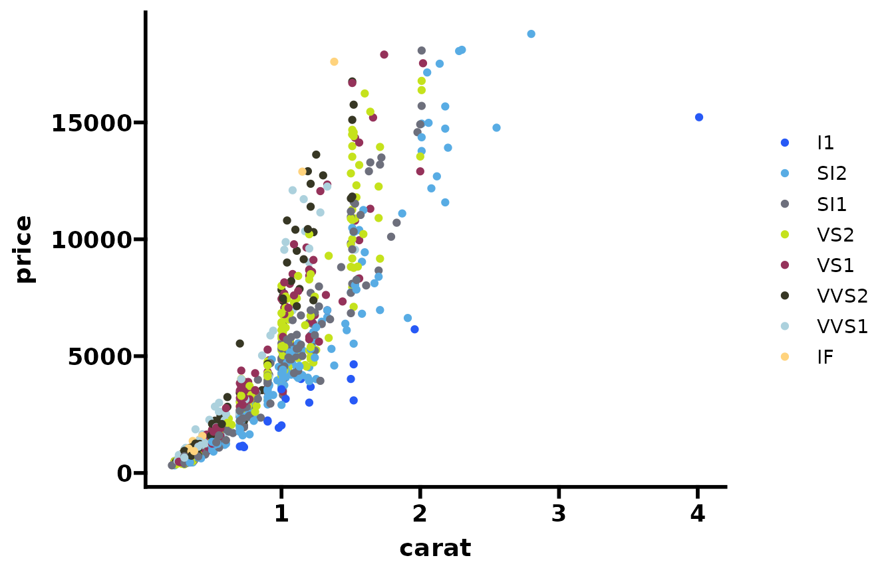
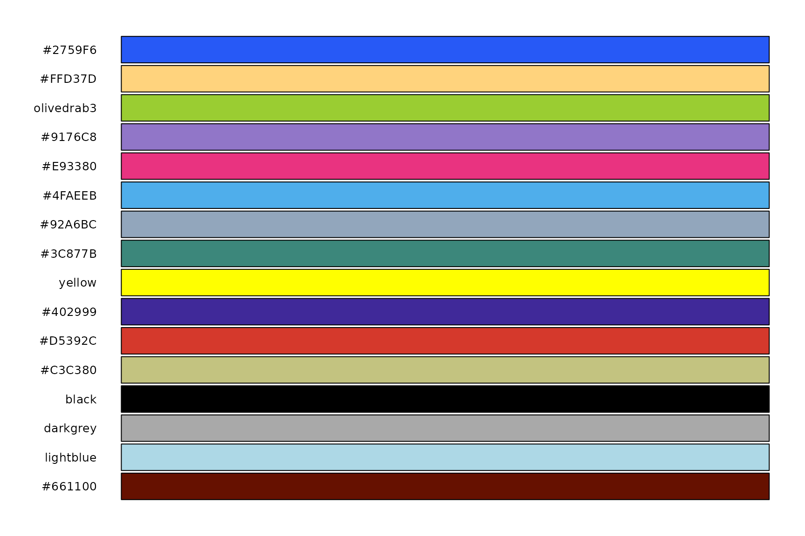

bcbioR quick start
bcbioR_quick_start.Rmd
library(bcbioR)
library(ggplot2)
library(ggprism)
colors=cb_friendly_cols(1:15)
ggplot2::theme_set(theme_prism(base_size = 14))Color blind friendly palette
Compatible with ggplot.
set.seed(596)
dsamp <- diamonds[sample(nrow(diamonds), 1000), ]
ggplot(dsamp, aes(carat, price)) +
geom_point(aes(colour = clarity)) +
scale_color_cb_friendly()
And get the colors directly:
cb_friendly_cols(1:16)
#> blue light_orange olive_green purple pink sky_blue
#> "#2759F6" "#FFD37D" "olivedrab3" "#9176C8" "#E93380" "#4FAEEB"
#> blue_grey forest_green yellow dark_purple dark_orange army_green
#> "#92A6BC" "#3C877B" "yellow" "#402999" "#D5392C" "#C3C380"
#> black dark_grey light_blue brown
#> "black" "darkgrey" "lightblue" "#661100"This is the full palette:
library(hues)
swatch(cb_friendly_cols(1:16))
Set projects
HCBC uses a structured based directory to organize projects. You can set up this by using:
tmp_dir=withr::local_tempdir()
bcbio_templates(type="base", outpath=tmp_dir)
#> ℹ Getting templates from
#> '/home/runner/work/_temp/Library/bcbioR/templates/base'
#> list()
fs::dir_ls(tmp_dir, recurse=TRUE)
#> /tmp/Rtmpv69CmB/file1d7015836a88/README.md
#> /tmp/Rtmpv69CmB/file1d7015836a88/TOC.md
#> /tmp/Rtmpv69CmB/file1d7015836a88/apps
#> /tmp/Rtmpv69CmB/file1d7015836a88/code
#> /tmp/Rtmpv69CmB/file1d7015836a88/code/placeholder.R
#> /tmp/Rtmpv69CmB/file1d7015836a88/data
#> /tmp/Rtmpv69CmB/file1d7015836a88/data/readme
#> /tmp/Rtmpv69CmB/file1d7015836a88/information.R
#> /tmp/Rtmpv69CmB/file1d7015836a88/meta
#> /tmp/Rtmpv69CmB/file1d7015836a88/meta/placeholder.R
#> /tmp/Rtmpv69CmB/file1d7015836a88/reports
#> /tmp/Rtmpv69CmB/file1d7015836a88/reports/example.Rmd
#> /tmp/Rtmpv69CmB/file1d7015836a88/reports/placeholder
#> /tmp/Rtmpv69CmB/file1d7015836a88/scripts
#> /tmp/Rtmpv69CmB/file1d7015836a88/scripts/placeholderWe support multiple analyses type:
- RNAseq
- scRNAseq
- ChipPseq
To get the example code for any of them you can use a similar command:
analysis_tmp=fs::path_join(c(tmp_dir, "reports"))
bcbio_templates(type="rnaseq", outpath=analysis_tmp)
#> ℹ Getting templates from
#> 'https://github.com/bcbio/rnaseq-reports/archive/refs/heads/main.zip'
#> list()
fs::dir_ls(analysis_tmp, recurse=TRUE)
#> /tmp/Rtmpv69CmB/file1d7015836a88/reports/00_libs
#> /tmp/Rtmpv69CmB/file1d7015836a88/reports/00_libs/FA.R
#> /tmp/Rtmpv69CmB/file1d7015836a88/reports/00_libs/load_data.R
#> /tmp/Rtmpv69CmB/file1d7015836a88/reports/00_params
#> /tmp/Rtmpv69CmB/file1d7015836a88/reports/00_params/params-example.R
#> /tmp/Rtmpv69CmB/file1d7015836a88/reports/00_params/params.R
#> /tmp/Rtmpv69CmB/file1d7015836a88/reports/01_quality_assessment
#> /tmp/Rtmpv69CmB/file1d7015836a88/reports/01_quality_assessment/QC.Rmd
#> /tmp/Rtmpv69CmB/file1d7015836a88/reports/01_quality_assessment/run_markdown.R
#> /tmp/Rtmpv69CmB/file1d7015836a88/reports/02_differential_expression
#> /tmp/Rtmpv69CmB/file1d7015836a88/reports/02_differential_expression/DEG.Rmd
#> /tmp/Rtmpv69CmB/file1d7015836a88/reports/02_differential_expression/run_markdown.R
#> /tmp/Rtmpv69CmB/file1d7015836a88/reports/03_comparative
#> /tmp/Rtmpv69CmB/file1d7015836a88/reports/03_comparative/Intersections.Rmd
#> /tmp/Rtmpv69CmB/file1d7015836a88/reports/03_comparative/Pair-wise-comparison-analysis.Rmd
#> /tmp/Rtmpv69CmB/file1d7015836a88/reports/03_functional
#> /tmp/Rtmpv69CmB/file1d7015836a88/reports/03_functional/GSVA.Rmd
#> /tmp/Rtmpv69CmB/file1d7015836a88/reports/03_functional/Immune-deconvolution.Rmd
#> /tmp/Rtmpv69CmB/file1d7015836a88/reports/03_functional/Nonmodel_Organism_Pathway_Analysis.Rmd
#> /tmp/Rtmpv69CmB/file1d7015836a88/reports/03_functional/params_immune_deconv.R
#> /tmp/Rtmpv69CmB/file1d7015836a88/reports/03_functional/params_nonmodel_org_pathways.R
#> /tmp/Rtmpv69CmB/file1d7015836a88/reports/04_gene_patterns
#> /tmp/Rtmpv69CmB/file1d7015836a88/reports/04_gene_patterns/DEGpattern.Rmd
#> /tmp/Rtmpv69CmB/file1d7015836a88/reports/04_gene_patterns/WGCNA.Rmd
#> /tmp/Rtmpv69CmB/file1d7015836a88/reports/04_gene_patterns/params_de-example.R
#> /tmp/Rtmpv69CmB/file1d7015836a88/reports/README.md
#> /tmp/Rtmpv69CmB/file1d7015836a88/reports/apps
#> /tmp/Rtmpv69CmB/file1d7015836a88/reports/example.Rmd
#> /tmp/Rtmpv69CmB/file1d7015836a88/reports/information.R
#> /tmp/Rtmpv69CmB/file1d7015836a88/reports/install_dependencies.R
#> /tmp/Rtmpv69CmB/file1d7015836a88/reports/placeholderUse scrnaseq, teaseq or cosmx
to get those other templates.